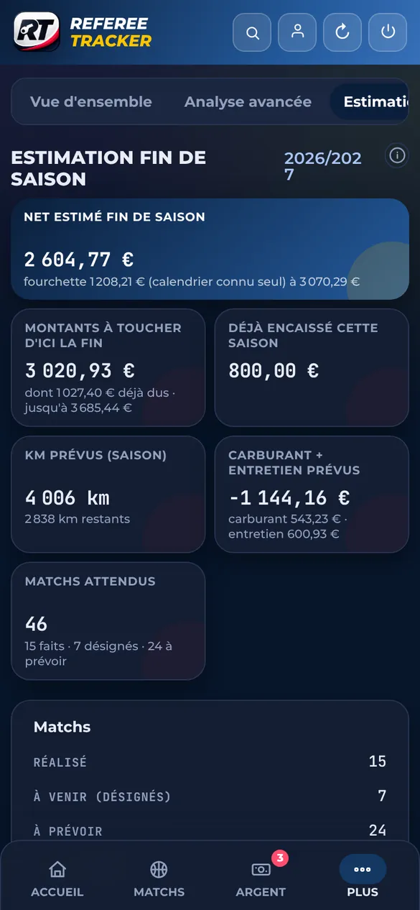

Indemnités d'arbitre de basket : comment elles sont calculées
Part fixe, kilomètres, payeurs, délais : tout ce qu'il faut savoir pour vérifier ce qu'on te verse, et un calculateur pour tester tes propres chiffres.

La formule de base
Pour la plupart des matchs, l'indemnité d'un arbitre de basket additionne deux éléments :
- une part fixe, qui dépend du niveau du match (départemental, régional, national) et de la catégorie (seniors, jeunes) ;
- une indemnité kilométrique : la distance aller-retour entre ton domicile et la salle, multipliée par un taux par kilomètre.
Exemple : 32 € de part fixe, 22 km aller et 0,40 €/km donnent 32 + 44 × 0,40 = 49,60 €.
Les montants exacts sont fixés par l'organisme qui te désigne : ton comité, ta ligue ou ta fédération. Ils peuvent changer d'une saison à l'autre. La convocation officielle et les barèmes publiés par ton organisme restent la référence.
Essaie avec tes chiffres
Exemple indicatif : la part fixe et le taux kilométrique dépendent de ton comité, de ta ligue et du niveau du match. Détail du calcul
Qui te paie, et quand ?
| Payeur | Matchs concernés | Paiement |
|---|---|---|
| Comité départemental | Championnats départementaux, jeunes | Souvent regroupé par périodes, à date fixe |
| Ligue régionale | Championnats régionaux | Par périodes, avec un délai après la fin de chaque période |
| Fédération | Championnats de France | Virement après le match, selon le calendrier fédéral |
| Clubs | Certaines rencontres, tournois, matchs amicaux | Sur place le jour du match, ou par virement |
Avec plusieurs payeurs et plusieurs calendriers, il devient vite difficile de savoir ce qui a été payé. C'est la principale source d'oublis : un match payé en retard, ou jamais, passe inaperçu.
Le coût réel d'un déplacement
L'indemnité kilométrique est forfaitaire. Ce que coûte réellement ton trajet dépend de ta voiture : une citadine à 5 L/100 km et un SUV à 8 L/100 km ne laissent pas le même reste. Ajoute l'usure (pneus, entretien) et, pour les longs déplacements, l'hôtel et les repas. Le calculateur ci-dessus te montre ce qu'il te reste une fois le carburant payé.
Cinq réflexes pour ne rien perdre
- Garde chaque convocation, y compris les modifications et les annulations.
- Vérifie la distance retenue : elle part de ton adresse déclarée.
- Note la date de paiement attendue pour chaque payeur.
- Marque chaque paiement reçu au fil de l'eau.
- Relance tôt : un oubli se règle plus facilement au bout de deux semaines qu'au bout de six mois.
Referee Tracker fait ces cinq étapes pour toi : chaque convocation transférée devient un match avec son indemnité, sa date de paiement prévue et une alerte si le virement n'arrive pas.
À lire aussi
Laisse l'app faire ces calculs pour toi.
Chaque convocation transférée devient un match avec son indemnité, sa date de paiement prévue et ses rappels.
Demander mon accès